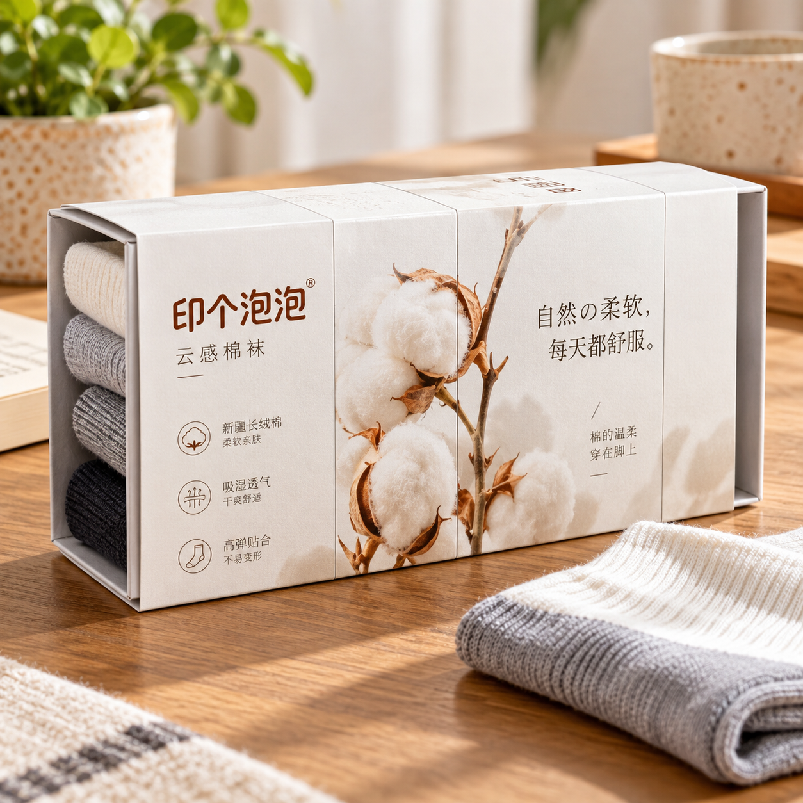

公司新闻
平台场景说明：卡纸封套，可以承担哪些展示任务？
2026-10-14 · 印个泡泡
把封套展示、内部固定和运输保护分别讨论，避免混淆用途。
用卡纸封套给产品或盒体增加一层视觉信息，可以形成不同展示方向。印个泡泡品类页提供卡纸封套入口；选型时要说清它围绕什么对象使用，以及希望完成什么任务。

平台维护方提供的设计场景素材，仅作外观参考，不是客户出货或保护性能证据。
展示信息：需要看见什么？
先列出品牌文字、说明与必须保留的识别信息。封套覆盖的位置可能改变原有信息的可见性，排版时应一起核对，而不是只把新图案套到参考照片上。
装配关系：围绕什么对象？
封套用于产品、盒体或组合方案时，需确认实际对象的形态与装配方式。只知道盒子的一个尺寸，未必足以确定封套文件；材料和具体结构由生产方一起核对。
保护任务：有没有其他包装承担？
封套的展示作用不等于内托固定或运输外箱的保护作用。若内容物需要固定或还需运输，分别列出这些要求，不从场景图推断单个封套能完成全部任务。
一个清楚的需求说明可以分为“展示什么”“围绕什么”“由谁承担保护”。三个答案合起来，再确认当前可选方案和样品表现。本文不提供统一承载、配合公差或材料厚度。
查看平台品类。本文为平台使用说明，核对日期2026-10-14，不承诺新增功能或固定交期。
为你的产品，找到适合的包装。
选包装，获取报价 →